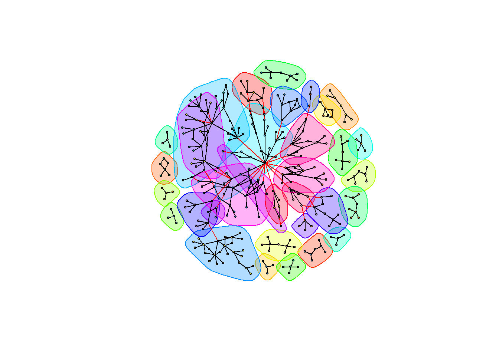

library(tidyverse)
library(readr)
library(igraph)
library(sna)
library(ggplot2)
library(patchwork)This post will explore the Synthetic Mass network data in more detail.
Read in Data
pat_attr <- read_csv("post1drug_data/pat_attr.csv",
col_types = cols(...1 = col_skip()))
pro_attr <- read_csv("post1drug_data/pro_attr.csv",
col_types = cols(...1 = col_skip()))
encounters_cleaning <- read_csv("post1drug_data//encounters_cleaning.csv",
col_types = cols(...1 = col_skip()))
encounters_cleaned <- read_csv("post1drug_data//encounters_cleaned.csv",
col_types = cols(...1 = col_skip()))
encounter_attributes <- read_csv("post1drug_data/encounter_attributes.csv",
col_types = cols(...1 = col_skip()))
encounters_el <- read_csv("post1drug_data/encounters_el.csv",
col_types = cols(...1 = col_skip()))
encounters_st_3 <- read_csv("post1drug_data/encounters.st.3.csv",
col_types = cols(...1 = col_skip()))
attribute_list <- read.csv("post1drug_data/attribute_list.csv")Prep Data for Analysis
#combine pro and pat attr
pat_attr$type <- "PATIENT"
pro_attr$type <- "PROVIDER"
both_attr <- bind_rows(pat_attr, pro_attr)
head(both_attr)# A tibble: 6 × 8
NAME GENDER RACE MARITAL CITY INCOME AGE type
<chr> <chr> <chr> <chr> <chr> <dbl> <dbl> <chr>
1 Annice210 Gleason633 Female white Married brookline 1565 37 PATIENT
2 Julianne852 Barrows492 Female white Widowed hamilton 39537 65 PATIENT
3 Alesha810 Heaney114 Female white Divorced framingham 114339 46 PATIENT
4 Sandee884 Rice937 Female white <NA> taunton 96256 26 PATIENT
5 Mia349 Runte676 Female white Divorced chelmsford 71238 44 PATIENT
6 Damian46 Dach178 Male white <NA> swansea 74155 26 PATIENTCreate bipartite network with attributes
encounters.st.3 <- network(encounters_el,
directed = FALSE,
bipartite = TRUE,
matrix.type = "edgelist",
vertex.attr = attribute_list)
encounters.st.3 Network attributes:
vertices = 308
directed = FALSE
hyper = FALSE
loops = FALSE
multiple = FALSE
bipartite = 86
total edges= 341
missing edges= 0
non-missing edges= 341
Vertex attribute names:
AGE CITY GENDER INCOME MARITAL NAME RACE type vertex.names X
Edge attribute names:
COUNT head(network.vertex.names( encounters.st.3))[1] "Adam631 Hoppe518" "Alesha810 Heaney114"
[3] "Alissa315 Altenwerth646" "Analisa263 Kohler843"
[5] "Annice210 Gleason633" "Anthony633 Kutch271" Graphs
Graphs with sna
# load the sna library to get the gplot() function
library( sna )
# set the seed to reproduce the plot layout
set.seed( 507 )
# execute the plot
gplot(
encounters.st.3,
gmode = "twomode", # indicate it is two modes
usearrows = FALSE, # turn off the arrowheads
vertex.cex=2, # size the nodes
label.cex=1.2, # size the labels
main="Bipartite Graph of Encounters using SNA" # add a title
)incidence_graph <- graph_from_biadjacency_matrix(encounters.st.3)detach(“package:sna”)
Graphs with igraph
vertex_colors <- ifelse(attribute_list$GENDER == "Female", "pink", "turquoise")
V(incidence_graph)$shape <- ifelse(V(incidence_graph)$type, "square", "circle")
# Define edge colors based on COUNT attribute
edge_colors <- ifelse(encounters_el$COUNT < 5, "lightblue",
ifelse(encounters_el$COUNT <= 20, "blue",
ifelse(encounters_el$COUNT <= 100, "darkblue", "red")))
# Check if the length of edge_colors matches the number of edges
if (length(edge_colors) == ecount(incidence_graph)) {
# Set edge attributes based on counts
E(incidence_graph)$color <- edge_colors
} else {
print("Length of edge_colors does not match the number of edges in the graph.")
}
E(incidence_graph)$color <- edge_colors
# set the seed to reproduce the plot layout
set.seed( 235 )
plot(incidence_graph,
layout = layout.fruchterman.reingold,
vertex.label.dist = 2,
vertex.size = 3,
vertex.color = vertex_colors,
edge.label = NA,
vertex.label = NA,
vertex.label.cex = 0.2,
main = "Patient Provider Incidence Graph")
# Define legend for vertex colors
legend("bottomright",
legend = c("Female", "Male"), # You can customize these labels
fill = c("pink", "turquoise"), # Fill colors corresponding to vertex colors
title = "Nodes: Gender") # Legend title
# Define legend for vertex shapes
legend("topright",
legend = c("Patient", "Provider"), # You can customize these labels
pch = c(1, 0), # Point shapes corresponding to vertex shapes
title = "Nodes: Who") # Legend title
# Define legend for edge colors
legend("topleft",
legend = c("1-4", "5-19", "20-99", "100+"), # You can customize these labels
col = c("lightblue", "blue", "darkblue", "red"), # Line colors corresponding to edge colors
lwd = 2, # Line width
title = "Edges: # of Visits") # Legend title#Calculating centrality
types <- V(incidence_graph)$type
deg<- igraph::degree(incidence_graph)
bet <- igraph::betweenness(incidence_graph)
clos <- igraph::closeness(incidence_graph)
eig <- eigen_centrality(incidence_graph)$vector
const <- constraint(incidence_graph)
cent_df <- data.frame(types, deg, bet, clos, eig, const)
head(cent_df[order(cent_df$deg, decreasing = TRUE),], 10) types deg bet clos eig const
Ted955 Reilly981 TRUE 17 18288.5694 0.0014025245 1.000000000 0.05882353
Jewel43 Kassulke119 TRUE 9 5293.0889 0.0010405827 0.122089385 0.11111111
Ramon749 Kozey370 FALSE 8 5920.4667 0.0011904762 0.314695380 0.12500000
Sabine292 Feil794 FALSE 7 8039.1255 0.0012135922 0.284892155 0.14285714
Tomika243 Walker122 FALSE 7 927.8167 0.0006793478 0.001624020 0.14285714
Gordon377 Marquardt819 FALSE 6 2112.5000 0.0011135857 0.284460108 0.16666667
Lan153 Schmidt332 FALSE 6 941.7033 0.0008726003 0.035407942 0.16666667
Stanley702 Cremin516 FALSE 6 823.4333 0.0006784261 0.001472952 0.16666667
Cortez851 Price929 TRUE 6 4823.0333 0.0007843137 0.004928315 0.16666667
Anderson154 Lemke654 TRUE 6 2266.9251 0.0009569378 0.231038624 0.16666667#provider only
pro_cent_df <- cent_df %>%
filter(types =="TRUE")
head(pro_cent_df[order(pro_cent_df$deg, decreasing = TRUE),], 10) types deg bet clos eig const
Ted955 Reilly981 TRUE 17 18288.56945 0.0014025245 1.000000000 0.05882353
Jewel43 Kassulke119 TRUE 9 5293.08892 0.0010405827 0.122089385 0.11111111
Cortez851 Price929 TRUE 6 4823.03333 0.0007843137 0.004928315 0.16666667
Anderson154 Lemke654 TRUE 6 2266.92508 0.0009569378 0.231038624 0.16666667
Randy380 Bergstrom287 TRUE 6 592.40699 0.0009354537 0.351045458 0.16666667
Karla801 Cummerata161 TRUE 4 962.23333 0.0009149131 0.150977394 0.25000000
Thanh759 Weber641 TRUE 4 123.18801 0.0007446016 0.023410004 0.25000000
Mertie42 Lakin515 TRUE 4 673.44586 0.0007733952 0.036012291 0.25000000
Fidel864 Swift555 TRUE 3 39.28333 0.0006779661 0.009873917 0.33333333
Virgen207 Hyatt152 TRUE 3 664.43333 0.0009132420 0.058784103 0.33333333summary(pro_cent_df) types deg bet clos
Mode:logical Min. : 1.000 Min. : 0.00 Min. :0.0004787
TRUE:222 1st Qu.: 1.000 1st Qu.: 0.00 1st Qu.:0.0006925
Median : 1.000 Median : 0.00 Median :0.0009033
Mean : 1.536 Mean : 239.29 Mean :0.0343315
3rd Qu.: 2.000 3rd Qu.: 8.95 3rd Qu.:0.0541667
Max. :17.000 Max. :18288.57 Max. :0.2000000
eig const
Min. :0.000000 Min. :0.05882
1st Qu.:0.000000 1st Qu.:0.50000
Median :0.003459 Median :1.00000
Mean :0.026668 Mean :0.82997
3rd Qu.:0.047516 3rd Qu.:1.00000
Max. :1.000000 Max. :1.00000 #patient only
pat_cent_df <- cent_df %>%
filter(types =="FALSE")
head(pat_cent_df[order(pat_cent_df$deg, decreasing = TRUE),], 10) types deg bet clos eig const
Ramon749 Kozey370 FALSE 8 5920.4667 0.0011904762 0.314695380 0.1250000
Sabine292 Feil794 FALSE 7 8039.1255 0.0012135922 0.284892155 0.1428571
Tomika243 Walker122 FALSE 7 927.8167 0.0006793478 0.001624020 0.1428571
Gordon377 Marquardt819 FALSE 6 2112.5000 0.0011135857 0.284460108 0.1666667
Lan153 Schmidt332 FALSE 6 941.7033 0.0008726003 0.035407942 0.1666667
Stanley702 Cremin516 FALSE 6 823.4333 0.0006784261 0.001472952 0.1666667
Carl856 Rempel203 FALSE 5 830.0000 0.0008605852 0.030456389 0.2000000
Chanell45 Morissette863 FALSE 5 704.1182 0.0008620690 0.034515722 0.2000000
Cherise743 Prosacco716 FALSE 5 618.7667 0.0006775068 0.001379585 0.2000000
Cindi877 Hane680 FALSE 5 219.5667 0.0007727975 0.099507009 0.2000000summary(pat_cent_df) types deg bet clos
Mode :logical Min. :2.000 Min. : 0.5 Min. :0.0005319
FALSE:86 1st Qu.:3.000 1st Qu.: 15.0 1st Qu.:0.0007770
Median :4.000 Median : 422.6 Median :0.0008897
Mean :3.965 Mean : 727.9 Mean :0.0453422
3rd Qu.:4.000 3rd Qu.: 708.9 3rd Qu.:0.0666667
Max. :8.000 Max. :8039.1 Max. :0.3333333
eig const
Min. :0.00000 Min. :0.1250
1st Qu.:0.00000 1st Qu.:0.2500
Median :0.01549 Median :0.2500
Mean :0.07111 Mean :0.2712
3rd Qu.:0.06090 3rd Qu.:0.3333
Max. :0.36702 Max. :0.5000 V(incidence_graph)$size <- igraph::degree(incidence_graph)
# set the seed to reproduce the plot layout
set.seed( 235 )
plot(incidence_graph,
layout = layout.fruchterman.reingold,
vertex.color = vertex_colors,
edge.color = "gray",
edge.label = NA,
vertex.label = NA,
main = "Patient Provider Incidence Graph with Degree Information")
# Define legend for vertex colors
legend("bottomright",
legend = c("Female", "Male"), # You can customize these labels
fill = c("pink", "turquoise"), # Fill colors corresponding to vertex colors
title = "Nodes: Gender") # Legend title
# Define legend for vertex shapes
legend("topright",
legend = c("Patient", "Provider"), # You can customize these labels
pch = c(1, 0), # Point shapes corresponding to vertex shapes
title = "Nodes: Who") # Legend title
# Define legend for edge colors
legend("topleft",
legend = "Vertex Size",
pch = 1,
pt.cex = seq(0.5, 3, length.out = 5),
title = "Degree")
Here we can see there is one Provider that sees the most patients, with degree centrality = 28. The next largest degree centrality are in the 5 to 7 range and the majority of those nodes are patients.
V(incidence_graph)$size <- igraph::closeness(incidence_graph)
# set the seed to reproduce the plot layout
set.seed( 235 )
plot(incidence_graph,
layout = layout.fruchterman.reingold,
vertex.color = vertex_colors,
edge.color = "gray",
edge.label = NA,
vertex.label = NA,
main = "Patient Provider Incidence Graph with Closeness Information")
# Define legend for vertex colors
legend("bottomright",
legend = c("Female", "Male"), # You can customize these labels
fill = c("magenta", "blue"), # Fill colors corresponding to vertex colors
title = "Nodes: Gender") # Legend title
# Define legend for vertex shapes
legend("topright",
legend = c("Patient", "Provider"), # You can customize these labels
pch = c(1, 0), # Point shapes corresponding to vertex shapes
title = "Nodes: Who") # Legend title
# Define legend for edge colors
legend("topleft",
legend = "Vertex Size",
pch = 1,
pt.cex = seq(0.5, 3, length.out = 5),
title = "Closeness")
Here we see two of the dyads on the outer right side of this incidence graph have the largest closeness score. This is because their network is complete (they are both connected to one another).
Triad Dyad Census
triads_incidence<-igraph::triad_census(incidence_graph)Warning in igraph::triad_census(incidence_graph): At
vendor/cigraph/src/misc/motifs.c:1140 : Triad census called on an undirected
graph. All connections will be treated as mutual.triads_incidence [1] 4718886 0 102594 0 0 0 0 0 0
[10] 0 876 0 0 0 0 0igraph::dyad_census(incidence_graph)Warning: `dyad_census()` requires a directed graph.$mut
[1] 341
$asym
[1] 0
$null
[1] 46937transitivity(incidence_graph)[1] 0transitivity(incidence_graph, type = "global")[1] 0mean_distance(incidence_graph)[1] 6.160216Component Structure and Membership
First, let’s look at the network component structure. This gives a list with: membership by node, size of each component, and the total number of components.
names(igraph::components(incidence_graph))[1] "membership" "csize" "no" igraph::components(incidence_graph)$no # number of components[1] 17igraph::components(incidence_graph)$csize #Size of each component [1] 211 7 6 7 4 6 9 7 4 4 5 8 9 8 4 4 5degree.wt=strength(incidence_graph)Graph Cluster
glou <- graph_from_data_frame(encounters_el[, 1:2], directed = FALSE)
lou <- cluster_louvain(glou)
set.seed(1)
plot(lou, glou, vertex.label = NA, vertex.size=2)set.seed(1)
plot(lou, glou, vertex.label = NA, vertex.size=5, mark.groups = NULL)set.seed(1)
plot(lou, glou, vertex.label = NA, vertex.size = 5, mark.border = NA)glou <- graph_from_data_frame(encounters_el[, 1:2], directed = FALSE)
walktrap <- cluster_leading_eigen(glou)
set.seed(1)
plot(walktrap, glou, vertex.label = NA, vertex.size=2)
set.seed(1)
plot(walktrap, glou, vertex.label = NA, vertex.size=5, mark.groups = NULL)set.seed(1)
plot(walktrap, glou, vertex.label = NA, vertex.size = 5, mark.border = NA)
Graph Providers and Patients Separately
projected_graph <- bipartite_projection(incidence_graph)
#providers
head(projected_graph$proj2)6 x 222 sparse Matrix of class "dgCMatrix" [[ suppressing 222 column names 'Elijah719 White193', 'Fidel864 Swift555', 'Virgen207 Hyatt152' ... ]]
Elijah719 White193 . 1 1 1 . . . . . . . . . . . . . . . . . . . . . . .
Fidel864 Swift555 1 . 1 2 . . . . . . . . . . . . . . . . . . . . . . .
Virgen207 Hyatt152 1 1 . 2 . . . 2 1 1 . . . . . . . . . . . . . . . . .
Zachery872 Pagac496 1 2 2 . . . . 1 . . . . . . . . . . . . . . . . . . .
Kristopher775 Schiller186 . . . . . 1 1 . . . . . . . . . . . . . . . . . . . .
Laine739 Torphy630 . . . . 1 . 1 . . . . . . . . . . . . . . . . . . . .
Elijah719 White193 . . . . . . . . . . . . . . . . . . . . . . . . . . .
Fidel864 Swift555 . . . . . . . . . . . . . . . . . . . . . . . . . . .
Virgen207 Hyatt152 . . . . . . . . . . . . . . . . . . . . . . . . . . .
Zachery872 Pagac496 . . . . . . . . . . . . . . . . . . . . . . . . . . .
Kristopher775 Schiller186 . . . . . . . . . . . . . . . . . . . . . . . . . . .
Laine739 Torphy630 . . . . . . . . . . . . . . . . . . . . . . . . . . .
Elijah719 White193 . . . . . . . . . . . . . . . . . . . . . . . . . . .
Fidel864 Swift555 . . . . . . . . . . . . . . . . . . . . . . . . . . .
Virgen207 Hyatt152 . . . . . . . . . . . . . . . . . . . . . . . . . . .
Zachery872 Pagac496 . . . . . . . . . . . . . . . . . . . . . . . . . . .
Kristopher775 Schiller186 . . . . . . . . . . . . . . . . . . . . . . . . . . .
Laine739 Torphy630 . . . . . . . . . . . . . . . . . . . . . . . . . . .
Elijah719 White193 . . . . . . . . . . . . . . . . . . . . . . . . . . .
Fidel864 Swift555 . . . . . . . . . . . . . 1 1 . . . . . . . . . . . .
Virgen207 Hyatt152 . . . . . . . . . . . . . . . . . . . . . . . . . . .
Zachery872 Pagac496 . . . . . . . . . . . . . . 1 . . . . . . . . . . . .
Kristopher775 Schiller186 . . . . . . . . . . . . . . . . . . . . . . . . . . .
Laine739 Torphy630 . . . . . . . . . . . . . . . . . . . . . . . . . . .
Elijah719 White193 . . . . . . . . . . . . . . . . . . . . . . . . . . .
Fidel864 Swift555 . . . . . . . . . . . . . . . . . . . . . . . . . . .
Virgen207 Hyatt152 . . . . . . . . . . . . . . . . . . . . . . . . . . .
Zachery872 Pagac496 . . . . . . . . . . . . . . . . . . . . . . . . . . .
Kristopher775 Schiller186 . . . . . . . . . . . . . . . . . . . . . . . . . . .
Laine739 Torphy630 . . . . . . . . . . . . . . . . . . . . . . . . . . .
Elijah719 White193 . . . . . . . . . . . . . . . . . . . . . . . . . . .
Fidel864 Swift555 . . . . . . . . . . 1 . . . . . . . . . . . . . . . .
Virgen207 Hyatt152 . . . . . . . . . . . . . . . . . . . . . . . . . . .
Zachery872 Pagac496 . . . . . . . . . . 1 . . . . . . . . . . . . . . . .
Kristopher775 Schiller186 . . . . . . . . . . . . . . . . . . . . . . . . . . .
Laine739 Torphy630 . . . . . . . . . . . . . . . . . . . . . . . . . . .
Elijah719 White193 . . . . . . . . . . . . . . . . . . . . . . . . . . .
Fidel864 Swift555 . . . . . . . . . . . . . . . . . . . . . . . . . . .
Virgen207 Hyatt152 . . . . . . . . . . . . . . . . . . . . . . . . . . .
Zachery872 Pagac496 . . . . . . . . . . . . . . . . . . . . . . . . . . .
Kristopher775 Schiller186 . . . . . . . . . . . . . . . . . . . . . . . . . . .
Laine739 Torphy630 . . . . . . . . . . . . . . . . . . . . . . . . . . .
Elijah719 White193 . . . . . . . . . . . . . . . . . . . . . . . . . . .
Fidel864 Swift555 . . . . . . . . . . . . . . . . . . . . . 1 1 . . . .
Virgen207 Hyatt152 . . . . . . . . . . . . . . . . . . . . . . . . . . .
Zachery872 Pagac496 . . . . . . . . . . . . . . . . . . . . . . . . . . .
Kristopher775 Schiller186 . . . . . . . . . . . . . . . . . . . . . . . . . . .
Laine739 Torphy630 . . . . . . . . . . . . . . . . . . . . . . . . . . .
Elijah719 White193 . . . . . .
Fidel864 Swift555 . . . . . .
Virgen207 Hyatt152 . . . . . .
Zachery872 Pagac496 . . . . . .
Kristopher775 Schiller186 . . . . . .
Laine739 Torphy630 . . . . . .provider_communities <- cluster_louvain(projected_graph$proj2)
provider_membership <- membership(provider_communities)
head(provider_membership,10) Elijah719 White193 Fidel864 Swift555 Virgen207 Hyatt152
1 1 1
Zachery872 Pagac496 Kristopher775 Schiller186 Laine739 Torphy630
1 2 2
Leonarda398 Schumm995 Mathew182 Howe413 Ted955 Reilly981
2 1 3
Vicente970 Armstrong51
1 #patients
head(projected_graph$proj1)6 x 86 sparse Matrix of class "dgCMatrix" [[ suppressing 86 column names 'Adam631 Hoppe518', 'Alesha810 Heaney114', 'Alissa315 Altenwerth646' ... ]]
Adam631 Hoppe518 . . 1 . . . . . . . . . . . . . . . . . . . . . . . . .
Alesha810 Heaney114 . . . . . 1 . . . . . . . . . . . . . . . . . . . . . .
Alissa315 Altenwerth646 1 . . . . . . . . . . . . . . . . . . . . 1 . . 1 1 . .
Analisa263 Kohler843 . . . . . . . . . . . 1 . . . . . . . . . . . . . . . .
Annice210 Gleason633 . . . . . . . . . . . . . . . . . . . . . . . . . 2 . .
Anthony633 Kutch271 . 1 . . . . . . . . . . . . . . . . . . . . . . . . . .
Adam631 Hoppe518 . . . 2 . . . . . . . . . . . . . . . . . . . . . . 2 .
Alesha810 Heaney114 . . . . . . . . . . . . . . . . . . . . . . . . . . . .
Alissa315 Altenwerth646 . . 1 2 1 . . . . . . 1 . . 1 1 . . . 1 . . 1 1 . . . .
Analisa263 Kohler843 . . . . . . . . . . . . . . 1 1 . . . . . . . . . . . .
Annice210 Gleason633 . . . . . . . . . . . . . . . . . . . . . . . . . . . .
Anthony633 Kutch271 . . . . . . . . . . . . . . . . . . . . . . . . . . . .
Adam631 Hoppe518 . . . . . . . . . . . . . . . . . . . . . . . . . 1 . .
Alesha810 Heaney114 . . . . . . . . . . . . . . . . . . . . . . . . . . . .
Alissa315 Altenwerth646 . . . . . 1 . . 1 . 1 1 . . 1 . . . . . . . . . . . . .
Analisa263 Kohler843 . . . . . . . . . . . . . . . . . . . . . . . . . . . .
Annice210 Gleason633 . . . . . . . . . . . . . . . . . . . . . . . . . . . .
Anthony633 Kutch271 . . . . . . . . . . . . . . . . . . . . . . . . . . . .
Adam631 Hoppe518 . .
Alesha810 Heaney114 . .
Alissa315 Altenwerth646 . .
Analisa263 Kohler843 . .
Annice210 Gleason633 . .
Anthony633 Kutch271 . .patient_communities <- cluster_louvain(projected_graph$proj1)
patient_membership <- membership(patient_communities)
head(patient_membership, 10) Adam631 Hoppe518 Alesha810 Heaney114 Alissa315 Altenwerth646
1 2 1
Analisa263 Kohler843 Annice210 Gleason633 Anthony633 Kutch271
3 3 2
Benedict104 Hintz995 Carl856 Rempel203 Chanell45 Morissette863
4 5 5
Chaya236 Sporer811
5 plot(projected_graph$proj1, vertex.color = membership(patient_communities),
vertex.label = NA, edge.arrow.size = 0.5)
plot(projected_graph$proj2, vertex.color = membership(provider_communities),
vertex.label = NA, edge.arrow.size = 0.5)